Plasticity
Plasticity (in ceramics) is a property exhibited by soft clay. Force exerted effects a change in shape and the clay exhibits no tendency to return to the old shape. Elasticity is the opposite.
Key phrases linking here: plasticizer, plasticity, plasticize - Learn more
Details
This term is used in reference to clays (or more often bodies that are blends of clay, feldspar and silica particles) and their ability to assume a new shape without any tendency to return to the old (elasticity). That being said the term is also used here in indirect ways - a clay might be said to be highly plastic as a way to imply other properties it would thus have to have: e.g. high dry strength and shrinkage, good slurry suspension and fine particle size.
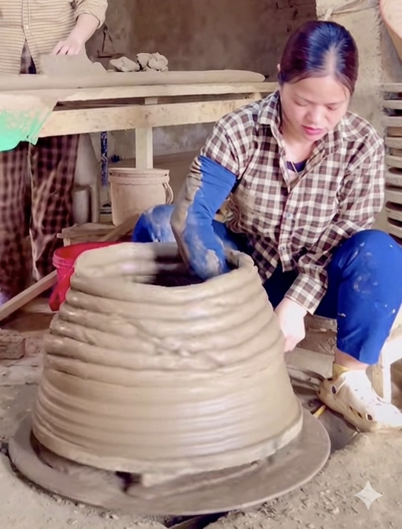
With plastic clay you can do amazing things!
In industry plasticity is often just gauged by the way a clay behaves in forming machines, how it dries and by its stickiness. Technicians look at particle size, shape, surface area information on data sheets to extrapolate plasticity. However potters find that simply throwing two samples of clay on the potters wheel a more practical way to compare plasticities. Lab workers at manufacturing companies see plasticity as numbers on paper, they often make the assumption that plasticity is only a function of particle size (not particle identity) and are thus often not as fully aware of it as potters. Plastic clays are responsive, large thin pieces can be made (and made faster), wet pieces can be moved without excessive deformation and plastic clays center more easily during throwing. Non-plastic clays tend to split at edges during wedging and rolling, they generate a lot of slip, they are more difficult to center during throwing, they are more flabby and unresponsive and require more finicky refining work in the latter stages of the process.
Again, plasticity is mainly, but not only, a function of particle size (normally clays of finer ultimate particle sizes are more plastic). Its nature is also a product of how the surface chemistry, the particle shape, the mineralogy of the particles and the presence of impurity non-plastic particles in the matrix. The fact that particle identity (rather than particle size) is the key factor in plasticity can be demonstrated. Ball milling a non-clay material to sub-micron particle sizes does not make it plastic. Ball milling a kaolin to bentonite particle sizes will not give it the plasticity of a bentonite. For another example that demonstrates that the nature of particles is as, or more important as their size: You can plasticize zirconium silicate or calcined alumina with only 3-4% Veegum! Clearly, the nature of the particles of the host material mix to which the clay is added make a difference in how effective the plasticizing action is.
Clay particles of different sizes require differing amounts of water to plasticize them. But particles of differing nature, that is, whose electrolytic surfaces react differently with water, also require differing amounts of water. This is another area where a potter sees plasticity much differently than a technician in a tile company lab. The former looks for WOPL (water of plasticity) values on data sheets (an indicator of the amount of water needed to make a raw material plastic, e.g. 26 grams per 100 grams of clay). However a potter sees water content as simply an indicator of how stiff a clay body is, he does not really care if a body has 21% or 23% water, as long as it is the stiffness he needs. Looking at WOPL numbers for various clays suggests that porcelains require much more water than stonewares and earthenwares. But this is not the case, this author has noted that almost all de-aired clay bodies, from coarse stonewares to fine porcelains need about 20-22% water for throwing consistency. Also that WOPL numbers are not a great indicator of plasticity. This can be verified by simply throwing on the potters wheel with a range of ball clay, kaolin, stoneware and earthenware materials. The degree of observed plasticities will not relate well to the WOPL numbers on the data sheets (e.g. drastic differences in plasticity will only be small differences in WOPL).
Typically 50% or more clay is needed to create a body or porcelain for plastic forming (by "plastic forming" we mean a body that is plastic enough that a potter could pull it up into a tall thin cylinder with little trouble). Augmenting with bentonites can reduce the clay requirement to 40% of the total.
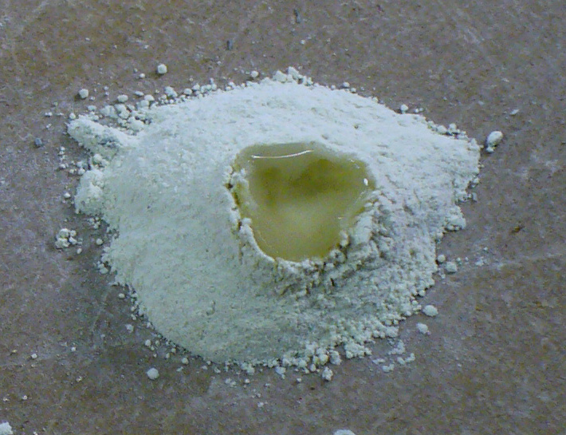
A few drops of water on top of a tiny pile of bentonite powder. The water just sits there in a little lake, it doesn't soak in because an impermeable layer forms.
Two clay bodies can have equal plasticities, but require different treatment during forming. For example, plasticity x (in a porcelain body) could be achieved using all clay and a little bentonite (in the recipe to make up the clay portion of the mix) while plasticity y could be a product on only kaolin with a high percentage of bentonite. While it might be possible to pull up a piece of similar height and wall thickness from both, there are important aspects of the second that need consideration. This type of mix cannot be moved as quickly when centering and pulling (during throwing), especially when stiffer. Handles must be pulled with more care to avoid ripping. While not always the case, this type of body will often generate very little slip during throwing.
In general, plastic clays are very sticky. The term 'gumbo' refers to clays that are very sticky (and therefore build up on the tires of cars). However it is also true that certain non-plastic clays can also be very sticky. New Zealand kaolin is an example of this.
Potters often speak about aging to improve the plasticity of clay bodies. But the author has observed that the only time aging is important is if a porcelain, for example, is so non-plastic that one is willing to do just about anything to improve it a bit. But, as noted, we have fine bentonites now so any body can be as plastic as needed. Right out of the pugmill.
The plasticity of a material is sometimes mentioned in the context of its use in glaze recipes or ceramic slurries. This is because plastic materials have very tiny particles that are active electrolytically (like tiny magnets). That property enables them to interact in a slurry, forming a network that suspends other particles. And the clay particles harden the slurry during drying. Interestingly, the drying and hardening properties of plastic clays are reversible. A raw glaze can be scraped off, rewetted and applied again, it will work just as well the second time. And third time. Clay bodies can likewise be reused. This is in contrast to ceramic powders that are hardened using organic binders, they can only be formed or applied once.
Atterberg plastic and liquid limit tests are performed on soils but are normally not applicable to most ceramic clays (since they are so much more plastic).
Related Information
Turbo-charge plasticity using bentonite, hectorite, smectite.
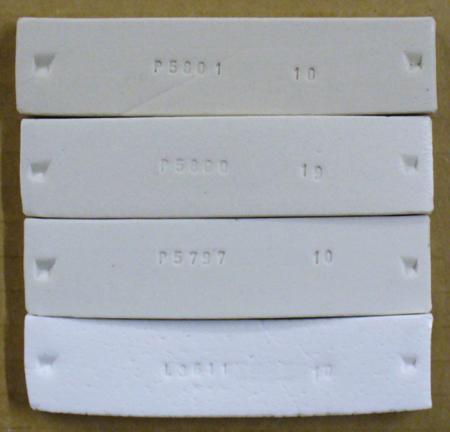
This picture has its own page with more detail, click here to see it.
These are porosity and fired shrinlage test bars, code numbered to have their data recorded in our group account at Insight-live.com. Plainsman P580 (top) has 35% ball clay and 17% American kaolin. H570 (below it) has 10% ball clay and 45% kaolin, so it burns whiter (but has a higher fired shrinkage). P700 (third down) has 50% Grolleg kaolin and no ball clay, it is the whitest and has even more fired shrinkage. Crysanthos porcelain (bottom, from China) also only employs kaolin, but at a much lower percentage, thus is has almost no plasticity (suitable for machine forming only). Do H570 and P700 sacrifice plasticity to be whiter? No, with added bentonite they have better plasticity than P580. Could that bottom one be super-charged? Yes, 3-4% VeeGum or Bentone (smectite, hectorite) would make it the most plastic of all of these (at a high cost of course).
Ridiculously plastic porcelain! How?
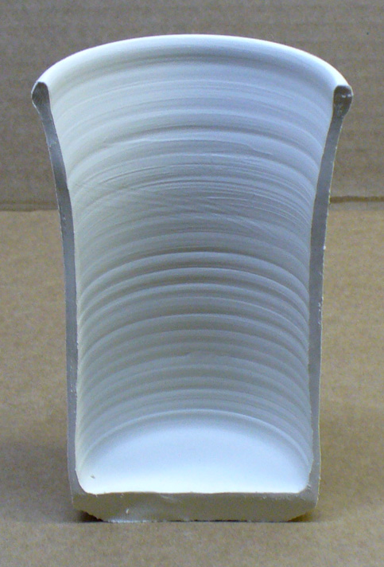
This picture has its own page with more detail, click here to see it.
A ridiculous recipe. I just threw this mug from a porcelain having 10% Veegum plasticizer (of course no one could afford that, it is $15 a pound). But anyway, I was testing the extreme. These mugs did not twist during throwing, I could have pulled the wall thinner at the middle and top. The wall thickness at the bottom is 2.3mm (less than 3/32")! This mug is 15cm (6 in) tall. One problem: It takes forever to dry.
The incredible plasticity of bentonite.
It is the secret to win the ThrowDown!
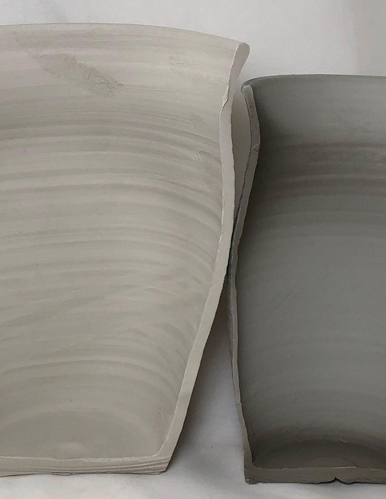
This picture has its own page with more detail, click here to see it.
The 20cm vase on the left is thrown from what I thought was a very plastic body, M370. I achieved close to the same thickness top-to-bottom (5mm). The one on the right was the same original height, 20cm. But it has dried down to only 18cm high, it shrinks 14% (vs. 6% for the other). The thinnest part of the wall is near the bottom, only 2mm thick! How is it possible to throw that thin? The body is 50% ball clay and 50% bentonite. Bentonite, by itself, cannot be mixed with water, but dry-blended with fine-particled ball clay it can. That bentonite is what produces this magic plasticity. But it comes at a cost. It took about four days to dewater the slurry on our plaster table. And one month under cloth and plastic to dry it without cracks.
Joining rules are different
When clay is soft and plastic
This picture has its own page with more detail, click here to see it.
This woman has quickly laid coils of smooth plastic clay on top of each other, in a conical shape. Then she simply begins throwing, centering, compressing and even verticaling the walls on the first pull. Since joining stiffer grogged clay elements, as done in typical hand-building, can be a time-consuming, elaborate process, how can this potter just ignore that?
-The clay is very soft, but very plastic (evident in how the coils are rolled, how the potter dangles the coils like a rope, yet they don’t break, and that she can make such large pieces).
-The coils are rolled on a wet table by a helper, then laid in place while still slip-covered and sticky (it glues them together on contact).
-The piece being made is large and the walls are thick. Asian potters are not averse to doing alot of trimming to thin them later.
-The mere act of applying pressure and thinning the wall also joins the coils.
Watch her do this on the Instagram video link on the home page for this post.
The sun. Brought to you by Plainsman Polar Ice!
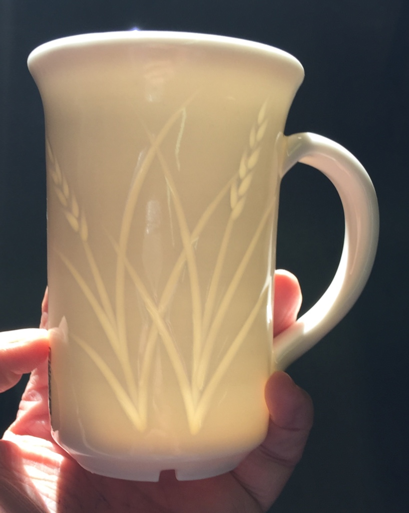
This picture has its own page with more detail, click here to see it.
The walls are very thin, yet no trimming was done to make them thin. Why? It is super plastic. Others claim to be plastic, but they use the word in a relative sense. They mean a little less flabby than other flabby porcelains! Polar ice, when it has the right water content (dewater it on a bat if needed), is tough enough to throw as large as even the most plastic stonewares. It might seem impossible that a body this translucent can be as plastic as it is and as stable in the kiln as it is. Want to know it’s recipe? Search around on this site and you will find clues in a number of places, put them together, do a little testing, and derive it yourself!
The most plastic kaolin in North America. Likely the world.
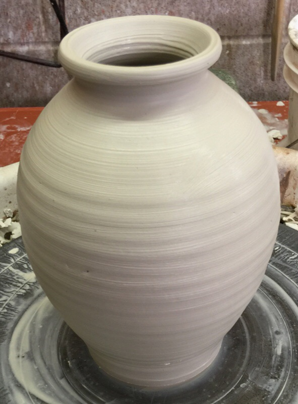
This picture has its own page with more detail, click here to see it.
#6 Tile kaolin is a "designer kaolin", they add bentonite to the material during manufacture to increase the plasticity far beyond what mother nature can make. This vase is made from the pure kaolin, it is very thin-walled and light, this would be impossible with almost any other kaolin. The fired colour is darker than some other North American kaolins but much less of this and less added bentonite is required in a recipe to get the same plasticity. Thus, in the end, a plastic porcelain body can often fire just as white using this as other whiter burning kaolins.
Ball clay vs. Kaolin porcelain at cone 6
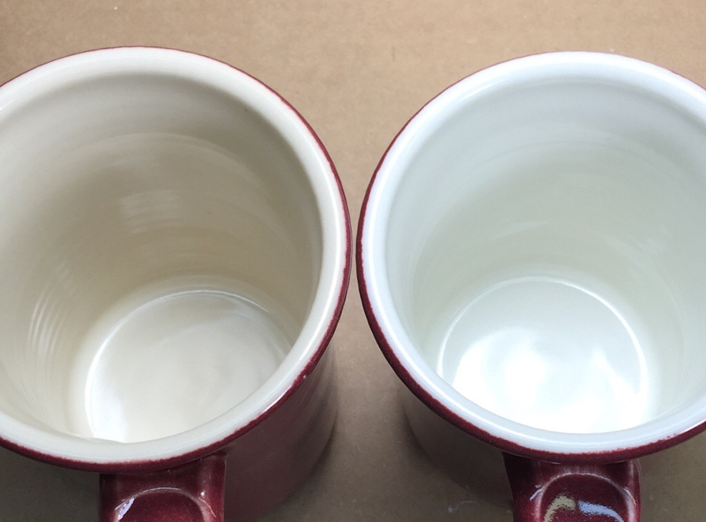
This picture has its own page with more detail, click here to see it.
Left: A porcelain that is plasticized using only ball clays (Spinx Gleason and Old Hickory #5). Right: Only kaolin (in this case Grolleg). Kaolins are much less plastic so bentonite (e.g. 2-5%) is typically needed to get good plasticity. The color can be alot whiter using a clean kaolin, but there are down sides. Kaolins have double the LOI of ball clays, so there are more gasses that potentially need to bubble up through the glaze (ball clay porcelains can produce brilliantly glassy and clean results in transparent glazes even at fast fire, while pure kaolins can produce tiny dimples in the glaze surface if firings are not soaked long enough). Kaolins plasticized by bentonite often do not dry as well as ball clays even though the drying shrinkage is usually less. Strangely, even though ball clays are so much harder and stronger in the dry state, a porcelain made using only ball clays often still needs some bentonite. If you do not need the very whitest result, it seems that a hibrid using both is still the best general purpose, low cost answer.
How plastic is a pure kaolin? Could one use it pure for pottery?
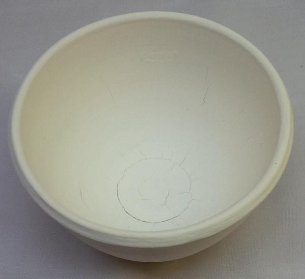
This picture has its own page with more detail, click here to see it.
Pure kaolins are clay. It seems logical that "pure clay" is plastic. However most kaolins are not plastic (compared to a typical clay for throwing or modelling). This is because they have a comparatively large particle size (compared to ball clays, bentonites, etc). This small bowl was thrown from #6 Tile kaolin. It is, by far, the most plastic kaolin available in North America. It's throwing properties are so good that one might be misled into thinking it should be possible to make pottery from it. Unfortunately, if it was survive drying without cracks, it would not make it through firing without this happening. This was fired, unglazed, to cone 6. Pure kaolin particles are flat and the throwing process lines them up concentric to centre. So shrinkage is greater across than along them. A filler is needed to separate the kaolin particles. All pure kaolins are also refractory, so even if this bowl had not cracked, the porosity of this piece is very high, completely impractical for functional ware (it needs a flux like feldspar to develop fired maturity).
Two plasticizers show vastly different potency
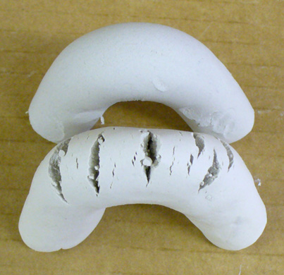
This picture has its own page with more detail, click here to see it.
A comparison of the plasticity of two bentonites was done by diluting them with silica. The top sample is Volcay 325 mixed 25:75 with silica. It is a standard Wyoming sodium bentonite - mined, dried and ground. The bottom specimen is Hectalite 200, a highly refined white hectorite, mixed 50:50 with silica. Notice how much less plastic it is (even though at double the percentage).
A low-fire talc body lacks plasticity when slip-mixed, but not when pugged
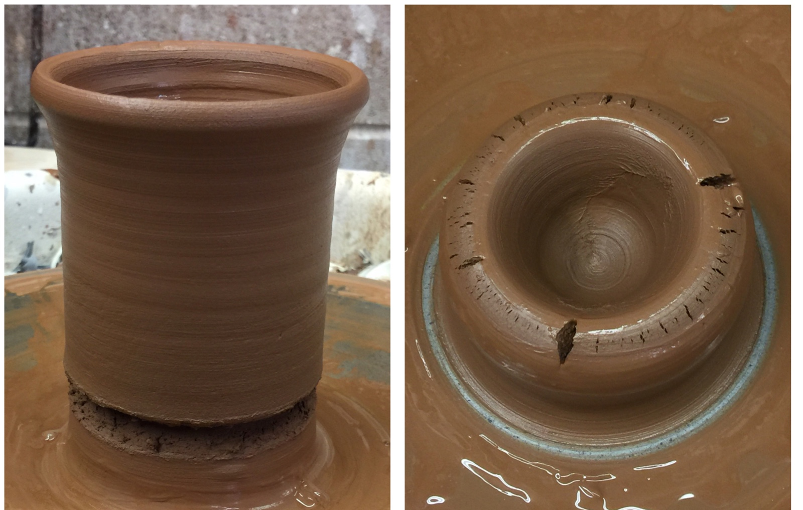
This picture has its own page with more detail, click here to see it.
This clay was slurried in a mixer and then poured onto a plaster table for dewatering. During throwing it is splitting when stretched and peeling when cutting the base. Yet when this same clay is water-mixed and pugged in a vacuum de-airing pugmill it performs well. One might think that the slurry mixer would wet all the particle surfaces better than a pugmill - that is our typical experience. However, it appears the energy that a pugmill can inject into the mix is needed to develop the plasticity when there is a high talc percentage in the recipe.
With porcelains, poor plasticity gets worse at the leather hard stage
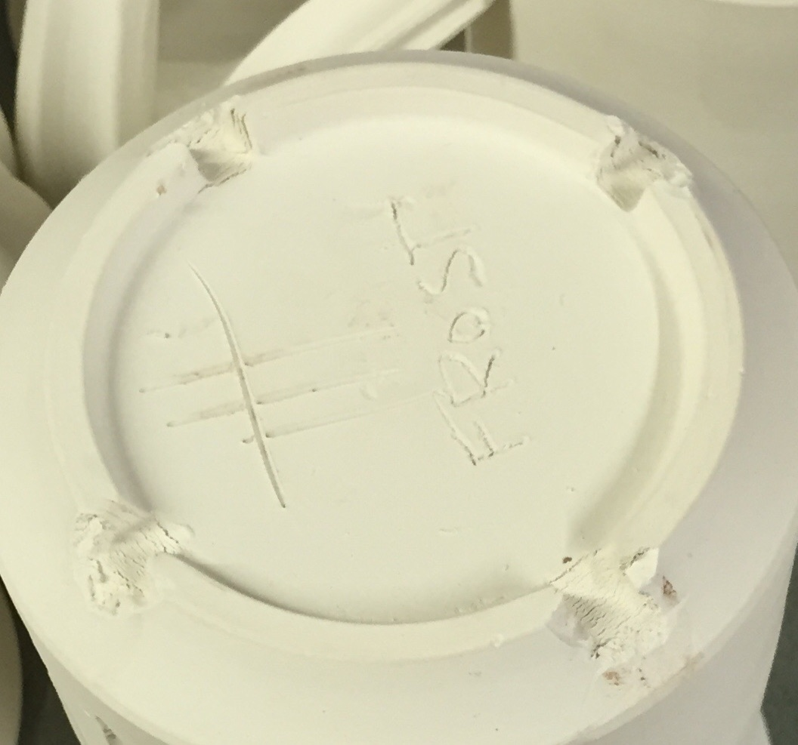
This picture has its own page with more detail, click here to see it.
This porcelain becomes quite brittle as it gets stiffer making it difficult to make these cuts in the foot ring. This creates extra sponging work when it is dry. It also means that dry strength will be low. Porcelains do not need to be this way, plenty of white burning bentonites are available (although they increase cost).
A difference between a non-plastic and a plastic throwing clay
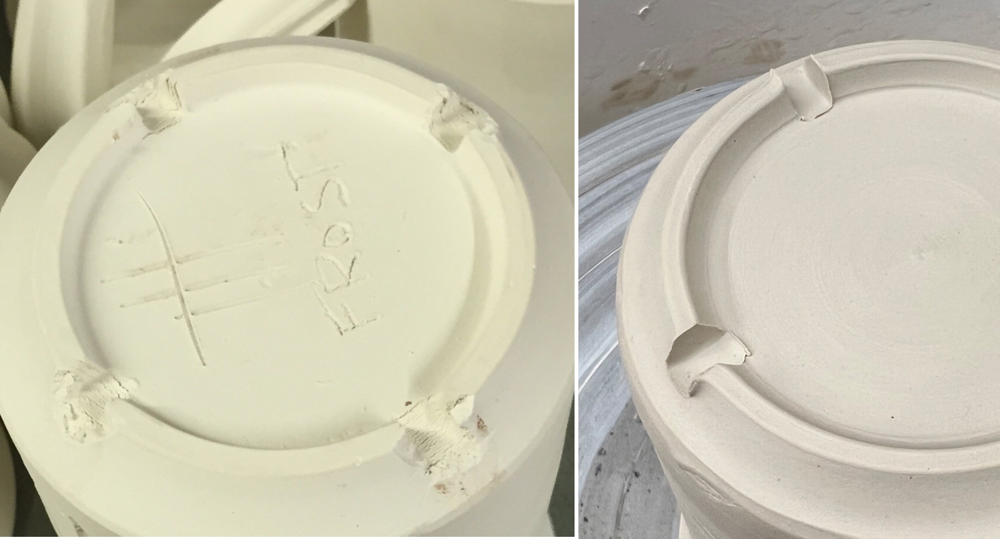
This picture has its own page with more detail, click here to see it.
These thrown mugs are both soft enough for tooling. The left one is a super-white translucent porcelain, so the kaolin used has poor plasticity. The result is a crumbly material - it is difficult to cut the flutes in the foot ring. It is also difficult to throw. An addition of white bentonite would completely solve this problem. The recipe of the body on the right employs a plastic kaolin and ball clay mix (plus bentonite), it is even more plastic, easier to throw and the fluting is no problem at all.
When clay bodies are too sticky and plastic they do not release from bats
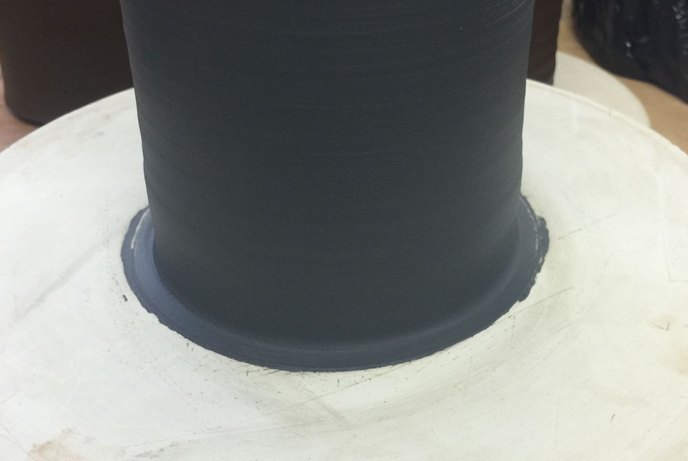
This picture has its own page with more detail, click here to see it.
This thrown vessel has sat on this plaster bat for almost 24 hours and yet still has not released. The bat was dry. It had to be slowly pried off with a flat scraper (which deformed it somewhat). When clay bodies are high in ball clay and bentonite they dry slower. If this is taken to an extreme, it can slow down production.
Pfefferkorn Plasticity Tester
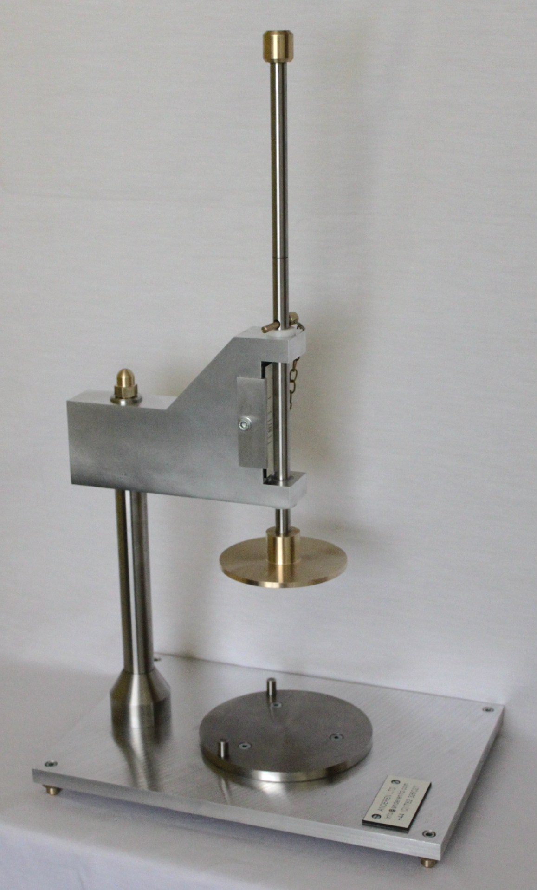
This picture has its own page with more detail, click here to see it.
Based on the Pfefferkorn Theory, this device measures the deformation of a plastic clay specimen under the fall of a metal plate. The results are normally expressed as graphs showing height reduction as a function of moisture content. Carrying out the test requires considerable preparation, record-keeping and the ability to effectively measure water content. Interestingly, upon compilation of the data for a given clay body (which is trusted to be of consistent plasticity), the results of this test can approximate the water content. This tester can be useful with glazes also, since they employ clay (which most do) they have plasticities (that is what hardens them on drying and suspends them in a slurry). The degree of plasticity walks a line between enough to deliver needed dry hardness but not too much to produce drying cracks.
Insufficient plasticity results in surface cracking during drying
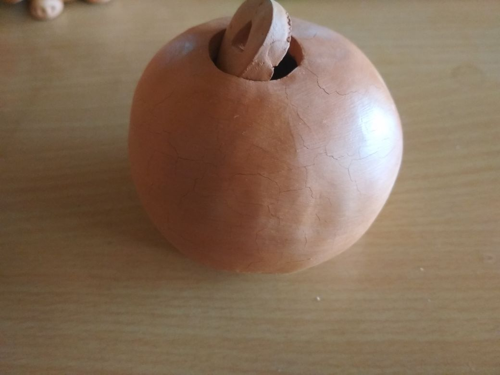
This picture has its own page with more detail, click here to see it.
This item was made in India. Their pottery tradition expects that ware can be sun-dried immediately after it is made. To make that possible their clay bodies have low plasticity and lots of large particle sizes. They have learned to work with these and regard them as normal. However potters in the west would find bodies like this unusable (they are accustomed to taking lots of care in drying in exchange for having much more plasticity). However, if Indian potters let the fine plastic clay portion of the body recipe decline too much then this type of surface-cracking issue can occur.
Albany Slip DFAC dried disk
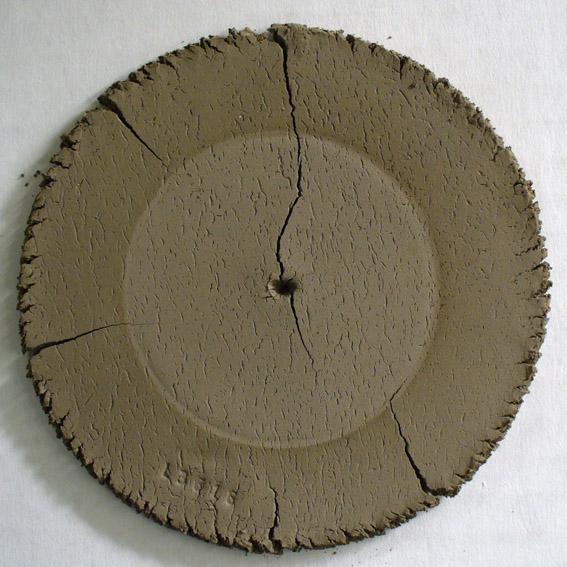
This picture has its own page with more detail, click here to see it.
This shows the soluble salts in the material and the characteristic cracking pattern of a DFAC test disk when made from a low plasticity clay. Notice the edges have peeled badly during cutting, this is characteristic of very low plasticity clays.
Can you actually throw a Gerstley Borate glaze? Yes!
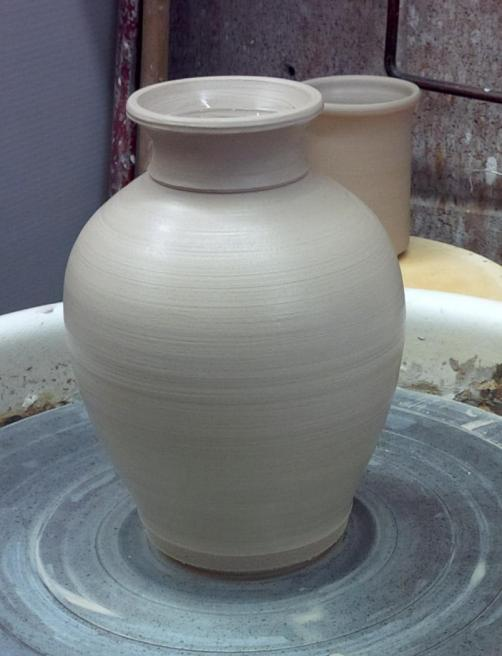
This picture has its own page with more detail, click here to see it.
G2931 Worthington Clear is a popular low to medium-fire transparent glaze recipe. It contains 55% Gerstley Borate (GB) plus 30% kaolin (GB melts at a very low temperature). GB is also very plastic, like a clay. I have thrown a pot from this glaze recipe! This explains why high Gerstley Borate glazes often dry so slowly and shrink and crack during drying. When recipes also contain a plastic clay like this one the shrinkage is even worse. GB is also slightly soluble, over time it gels glaze slurries even in smaller percentages. Countless potters struggle with Gerstley Borate recipes.
Throw Zircopax on the potters wheel. Just add VeeGum.

This picture has its own page with more detail, click here to see it.
These crucibles are thrown from a mixture of 97% Zircopax (zirconium silicate) and 3% Veegum T. The consistency of the material is good for rolling and making tiles but is not quite plastic enough to throw very thin (so I would try 4% Veegum next time). It takes alot of time to dewater on a plaster bat. But, these are like nothing I could make from any other material. They are incredibly refractory (fired to cone 10 they look like bisqued porcelain). However I have had mixed results for thermal shock resistance.
Eighteen Plainsman M390 mugs from half a box of clay!
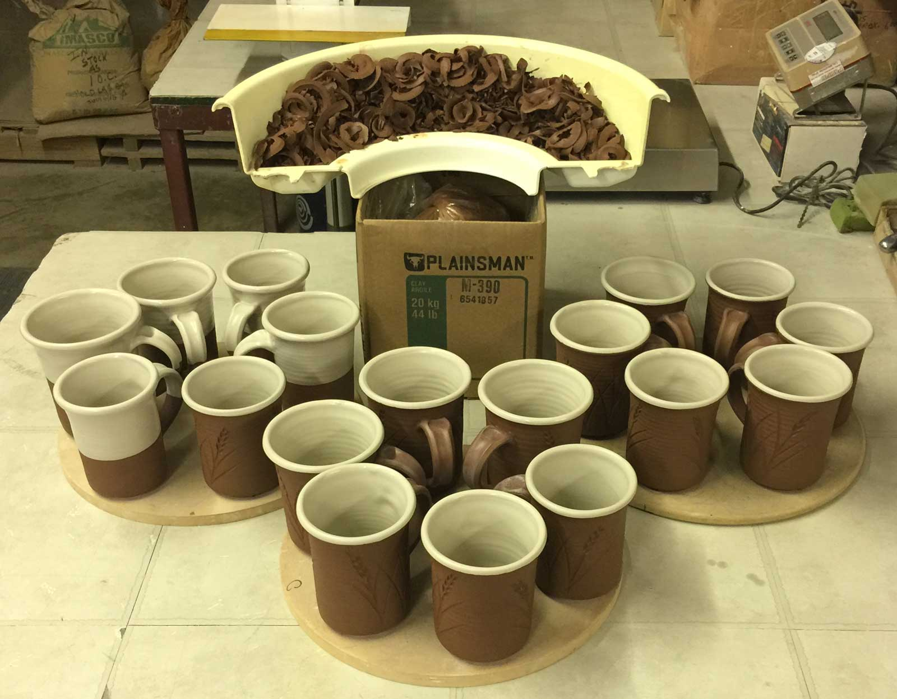
This picture has its own page with more detail, click here to see it.
The more plastic a clay is the more pieces of a given size can be made from a box (boxes are 20kg or 44 lbs). Each mug thus required 500g of pugged clay. These have been trimmed and engobed (using our standard L3954B cone 6 engobe) and are drying (the trimmings left over are enough to make about two more). Notice I have waxed the outers of some of the handles to slow their drying (to keep it in sync with the mug itself). M390 is likely the most plastic native Plainsman body. Although it was not overly soft I stiffened up the clay for ten minutes on a plaster bat to make it my ideal stiffness for throwing.
A body containing excessive non-plastics having a high bentonite addition for plasticity
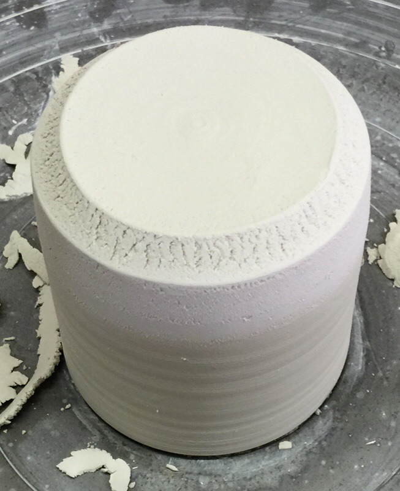
This picture has its own page with more detail, click here to see it.
This can happen during tooling (I am making a crucible here). While the plasticity is sufficient for throwing, at lower water contents it drops off quickly. This is a mix of 5% bentonite, 10% ball clay and 85% calcined alumina. For better trimming some refractory capability needs to be sacrificed for more ball clay (perhaps 20%).
Inbound Photo Links
|
How could only a 5% fine grog body be suitable for such large pieces? |
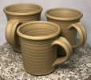 The ultimate testing instrument to measure plasticity: A potter's wheel. With an experienced potter. |
Links
| Glossary |
Clay
What is clay? How is it different than dirt? For ceramics, the answer lies on the microscopic level with the particle shape, size and how the surfaces interact with water. |
| Glossary |
Porcelain
How do you make porcelain? There is a surprisingly simple logic to formulating them and to adjusting their working, drying, glazing and firing properties for different purposes. |
| Glossary |
Bone China
A ceramic whose priorities are translucency, whiteness, fired strength and resistance to thermal shock failure. |
| Glossary |
Ultimate Particles
Utlimate particles of ceramic materials are finer than can be measured even on a 325 mesh screen. These particles are the key players in the physical presence of the material. |
| Glossary |
Splitting
|
| Glossary |
Water in Ceramics
Water is the most important ceramic material, it is present every body, glaze or engobe and either the enabler or a participant in almost every ceramic process and phenomena. |
| Glossary |
Drying Shrinkage
Clays used in ceramics shrink when they dry because of particle packing that occurs as inter-particle water evaporates. Excessive or uneven shrinkage causes cracks. |
| Glossary |
Clay Stiffness
In ceramics, clays exhibit plasticity in accordance with their recipe but also the water content. Each types of forming method has an ideal combination of stiffness and plasticity. |
| Materials |
Kaolin
The purest of all clays in nature. Kaolins are used in porcelains and stonewares to impart whiteness, in glazes to supply Al2O3 and to suspend slurries. |
| Materials |
Ball Clay
A fine particled highly plastic secondary clay used mainly to impart plasticity to clay and porcelain bodies and to suspend glaze, slips and engobe slurries. |
| Materials |
Bentonite
Bentonite can make a clay body instantly plastic, only 2-3% can have a big effect. It also suspends slurries so they don't settle out and slows down drying. |
| Projects |
Minerals
|
| Projects |
Properties
|
| Articles |
How to Find and Test Your Own Native Clays
Some of the key tests needed to really understand what a clay is and what it can be used for can be done with inexpensive equipment and simple procedures. These practical tests can give you a better picture than a data sheet full of numbers. |
| URLs |
http://nvlpubs.nist.gov/nistpubs/nbstechnologic/nbstechnologicpaperT234.pdf
Methods of Measuring the Plasticity of Clays |
| URLs |
https://www.youtube.com/watch?v=EcXJ961qjGA
Atterberg Plastic and Liquid Limit Tests |
| URLs |
https://www.instagram.com/reel/DTso5owEpf8
Chinese potters team-throwing gigantic porcelain vases Also making sections and gluing them together with slip at the almost-dry stage. They throw thick walls and do a lot of trimming at the almost-dry stage. |
 PayPal | No tracking, No ads, No paywall, No transient content! Just organized, concise information constantly updated and improved. Was this helpful? Consider supporting me. |
| By Tony Hansen Follow me on        |  |
Got a Question?
Buy me a coffee and we can talk 

https://digitalfire.com, All Rights Reserved
Privacy Policy